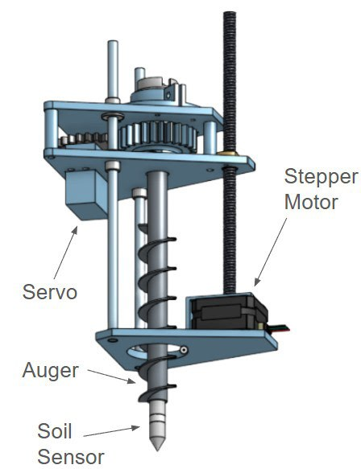
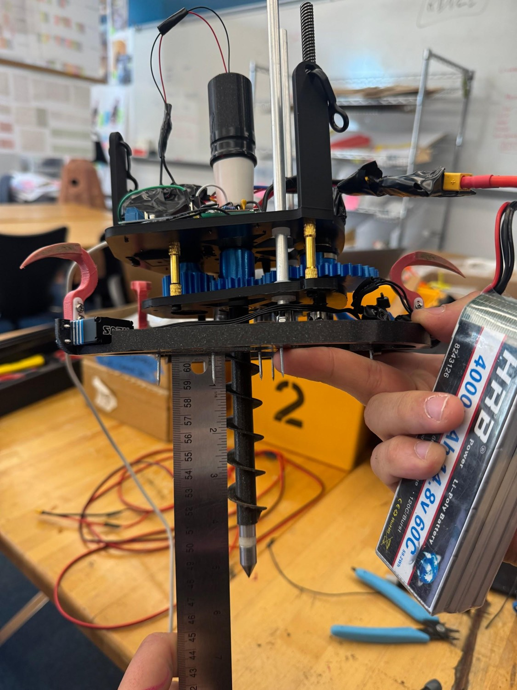

My role
Working across the mechanical system
I worked across the sampler’s mechanical design with our team: CAD, the geared auger and lead-screw drive, active anchors, suspension, prototype assembly, and soil testing.
The work was shared and iterative. We built prototypes, tested what prevented reliable insertion, and revised the mechanism around those failures. I became mechanical design co-lead in Fall 2026.
A small payload with a difficult job
The sampler needed to reach the soil beneath a drone, establish stable ground contact, insert a moisture probe, and retract for the next sample. Adding mass could help it resist drilling forces, but every component also had to fit within the drone’s payload budget.
That made the drive and anchors closely related design problems. The drive needed enough torque to cut and feed into the ground; the base needed enough grip to keep that force from lifting or twisting the whole sampler.
What changed—and why
Design decisions shaped by testing
Linking rotation and feed
We prototyped separate motors for auger rotation and vertical feed, then moved to a shared drive to reduce the number of motors. Printed gears let us change the relationship between rotation and travel as we tested.
The tradeoff was less independent control of the two motions. The gear relationship had to let the auger clear soil as the carriage advanced.
Letting the probe rotate
Our first arrangement kept the probe stationary inside the rotating auger. Friction and interference made it harder to clear soil, so we coupled the probe and auger to rotate together.
That created a wiring problem: the sensor leads twisted with each rotation. Adding a slip ring kept the electrical connection while allowing the probe to turn.
Choosing anchor motors for the load
We initially used very light anchor servos to save payload mass. In soil tests, they struggled to drive the anchors into the ground.
We accepted heavier servos and revised the anchor mounts. The decision balanced motor mass against the torque needed to penetrate the soil and establish a reliable hold.
Changing how the base grips
Passive spikes resisted twisting, but the sampler could still lift during insertion. Early powered anchors also proved too thin and unreliable.
We strengthened the mounts and developed tapered, curved anchors. A pocketed base reduced material, while small base spikes helped establish initial ground contact before the anchors deployed.
Testing the whole mechanism
Bench tests helped us check the drive, alignment, and retraction. Soil tests exposed problems that free motion could not: resistance during insertion, anchor pullout, base uplift, and weak mounting points.
What remained difficult
Anchor performance depended on the soil. Dense ground could prevent full entry; loose or brittle soil could let the anchors pull out. A successful insertion in one test did not establish repeatability across those conditions.
We also developed a three-point suspension with a stabilizing ring to help the sampler hang level. It improved the suspension geometry, but the hanging load could still oscillate during flight and landing.
The mechanism’s ultrasonic sensor measured travel between the plates. If the base lifted, that travel would not equal actual penetration into the ground—another reason anchoring mattered to the measurement.
Development history
From early concepts to an integrated prototype
The images below show earlier stages. The full assembly at the top of this page represents the later mechanical design.




A dated prototype snapshot
The April 10 review recorded a mass of 694 g and a little over 5 inches of mechanism travel. These figures describe that prototype stage; they do not establish the final design’s mass or its penetration depth in soil.
The wider team project
HydroFleet in the field
Farm Robotics Challenge’s overview places the sampler in the team’s wider drone-based soil-sampling system.